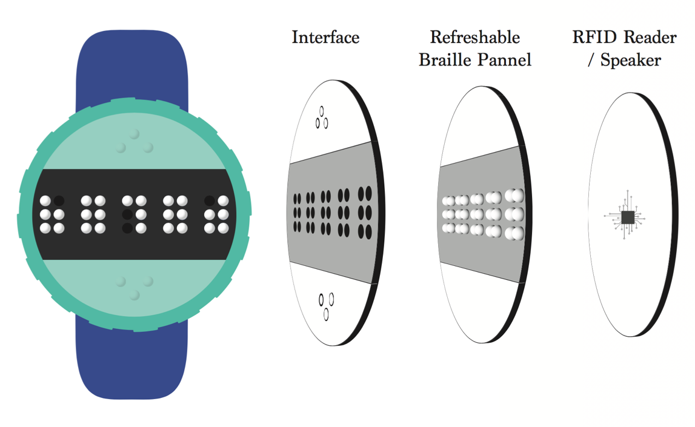
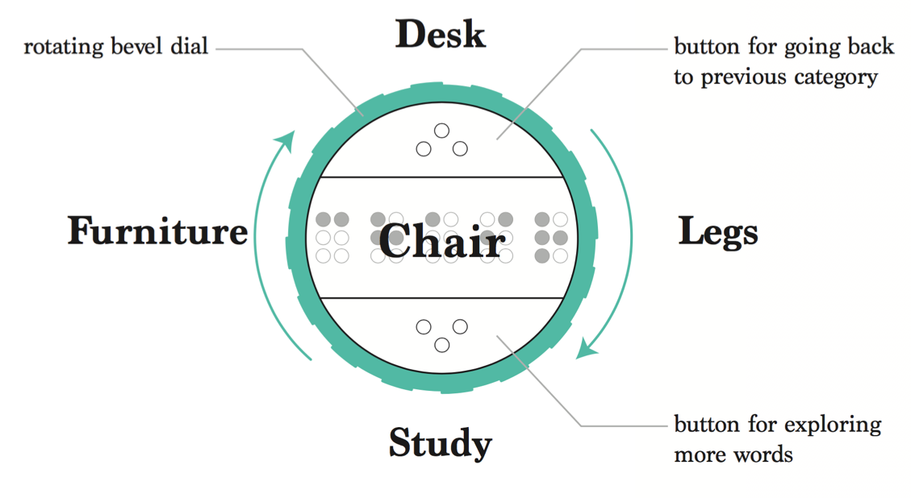

I participated in a team for designing assistive technologies and prepared for the CHI 2016 Student Design Competition. Our team designed a watch named Braille Buddy and it helps visually imparied children to sense objects around them.
BrailleBuddy is a wearble smart watch, which helps visually-impaired young students to learn Braille by providing Braille descriptions of one’s surroundings through a refreshable Braille display with RFID technology. Our overall goal is to increase blind students’ natural exposure to the Braille words linked to their surroundings, and to ultimately create increased opportunities for self-sufficient incidental learning.

Refreshable Braille Display with RFID Technology

BraillBuddy goes beyond providing blind children with labels by giving contextual information of words. Since the number of immediate objects surrounding a child is limited, we decided to create a system where a child can browse through multiple words. The watch has two buttons corresponding to “higher” and “lower”, and also a bevel dial that children can rotate.
A possible, secondary use for the watch involves not only obtaining descriptions of the objects and spaces in one’s surroundings, but also providing alerts when approaching an object that is unsafe. When a user approaches an item that is fragile or dangerous, he or she can receive an alert through vibration, and then receive information about that object through Braille or audio. Considering that the visually impaired often have difficulty distinguishing and avoiding fragile objects or potentially dangerous objects like sharp corners of furniture or hot surfaces, this subtle alert system can help users avoid harmful situations.
Although the main purpose of this tool is not to provide navigation, the Braille watch has the potential to allow a more nuanced way of deciphering one’s surroundings than existing tools, especially after RFID chips are implanted in labels like room numbers within buildings. As seen from our interviews, the visually impaired often have to rely on their sense of direction and memory when navigating buildings, which can be difficult in unfamiliar buildings or in buildings with complicated hallways and numerous rooms. Our tool can possibly help alleviate these struggles by allowing users to receive nearby information such as room numbers, hallways and bathrooms.